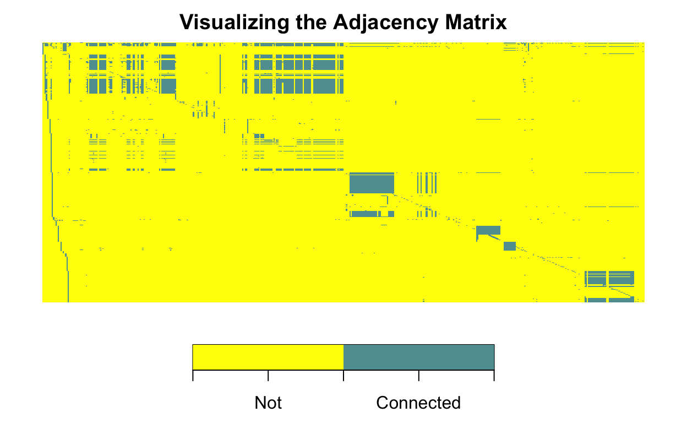

Google’s Page Rank Algorithm was an early tool that helped determine the relevance of search results.
How does the algorithm work? How can we implement the algorithm?
In this post, we investigate the mathematics behind the Page Rank algorithm and implement several different methods for obtaining results using R.
Originally published in 2014
When searching for a particular keyword on the internet, we want our search engine to return "relevant" websites. There are many possible ways of defining what we mean by relevant, but the one that the Google founders came up with in the 1990’s was the Page Rank method.
The crux of the idea of the Page Rank method is that the "importance" of a particular web-page can be defined to be the number of web-pages that link to it. The authors at http://www.math.cornell.edu/~mec/Winter2009/RalucaRemus/Lecture3/lecture3.html did a great job in explaining what this means, and I borrow their explanation here.
"If we create a web page i and include a hyperlink to the web page j, this means that we consider j important and relevant for our topic. If there are a lot of pages that link to j, this means that the common belief is that page j is important. If on the other hand, j has only one backlink, but that comes from an authoritative site k, (like www.google.com, www.cnn.com, www.cornell.edu) we say that k transfers its authority to j; in other words, k asserts that j is important. Whether we talk about popularity or authority, we can iteratively assign a rank to each web page, based on the ranks of the pages that point to it."
- Cornell Math Explorers Club Website
Using this idea of importance, we can turn a directed graph, one that represents the network structure of webpages (nodes are websites, edges are links), into a transition matrix for a Markov Chain. Then we can think of the most "relevant" websites as those with the highest probabilities in the stationary distribution of the Markov Chain.
There are, however, two issues that we need to adjust for. The first is that our graph may not be fully connected. That is, we are not guaranteed that a path exists to every website from every other website. This causes us to get stuck in one part of the graph and not be able to assess the importance of other parts of the graph. The second issue is “dangling nodes," websites that have links to them but they do not link anywhere else. In order to adjust for this, we have the idea of a”random surfer."
A "random surfer" is an entity that will randomly surf around the graph according to some basic rules. Let \(r_{i}\) be the out degree of webpage i. The out degree of a webpages is defined to be the number of webpages that it links to. When arriving to webpage i then they do one of the following things:
If \(r_{i} > 0\) then with probability p they uniformly chose a link on that page and with probability 1-p they choose a link uniformly from the space of n-pages
If \(r_{i} = 0\) then they choose a random page uniformly from the space of n-pages
We can notate this as follows.
Let A be an (nxn) adjacency matrix where \(a_{ij} = \mathbb{1}(\text{webpage i links to webpage j})\)
Define p to be the probability that a random surfer follows a link on the current page (1-p is called the "teleportation" parameter)
\(r_{i}\) be the out degree of webpage i. The out degree of a webpages is defined to be the number of webpages that it links to
The transition matrix P has entries \(p_{ij} = \mathbb{1}(r_{i}>0)\Big (\frac{pa_{ij}}{r_{i}} \Big ) + \mathbb{1}(r_{i}=0) \Big ( \frac{1-p}{n} \Big )\)
In matrix form, this can be written as:
\[P = pR^{+}A + z1_{n}^T\]
where, \(R = \text{diag}(r_{1},...,r_{n})\) and \(z_{j} = \mathbb{1}(r_{i}>0)(\frac{1-p}{n}) + \mathbb{1}(r_{i}=0)(\frac{1}{n})\)
Given this Markov Chain setup, we can find the stationary distribution which corresponds to the ranks (probabilities) of each page.
It turns out that P is a positive row stochastic matrix and thus \(P^T\) is column stochastic. The Perron-Frobenius Theorem guarantees that any column stochastic matrix has the following properties:
1 is an eigenvalue of multiplicity one
1 is the largest eigenvalue, all others are smaller in modulus
There exists a unique eigenvector corresponding to 1 that has all positive entries and sums to 1
This theorem thus gives us a few interesting ways to look at this problem, yielding several possible methods of solution.
The first way to think about this is as an eigen-problem. We want to find the eigenvector corresponding to eigenvalue 1. Since this eigenvalue is multiplicity one then there is only one such eigenvector (up to a constant). That is, we want to find x such that \(P^Tx = x\). There are many possible ways to solve such and eigen-problem such as Singular-Value Decomposition(SVD) or iteratively using the Power-Method.
The second way to think about this problem is as a linear system of equations. \(P^Tx = x \iff (I-P^T)x = 0\). We can solve such a linear system using ... or iteratively using the Jacobi Method, Gauss-Seidel, or Bi-Conjugate Gradient Methods.
In the rest of this document we explore these different methods of solving the Page Rank Problem using a data set of 500 webpages connected to the www.stat.ncsu.edu webpage. (Go Wolfpack!)
The A.txt data set is a (500x500) adjacency matrix of the top 500 web-pages linking to the www.stat.ncsu.edu website.
The total number of edges is equal to \(\sum_{i}{\sum_{j}{a_{ij}}} = 14,102\).
The out degree of the matrix is \(r_{i} = \sum_{j}{a_{ij}}\). The max out degree was 126, and the min was 0.
There were 97 dangling nodes.
These calculations were performed with the following code:
adj.matrix <- read.table(path_to_dataA,header=FALSE,sep = ",")
labels <- read.table(path_to_dataU,header=FALSE,sep = ",",as.is=TRUE)
adj.matrix <- as.matrix(t(adj.matrix))
labels<-as.matrix(labels)
(number.of.pages <- dim(adj.matrix)[1])
[1] 500(number.of.edges <- sum(adj.matrix))
[1] 14102[1] 0(max(out.degree))
[1] 126(number.of.dangling.nodes <- sum(out.degree==0))
[1] 97[1] 268(min(in.degree))
[1] 1Let’s quickly take a second to look at the sparsity pattern in the adjacency matrix. This is accomplished using the function fields::image.plot() from the "fields" package. The code to make this plot is below.

We can see that the majority of the matrix is zeros, thus this is a sparse matrix. This structure can be exploited to speed up the solving of this system. We also see that many pages have nearly identical linking structures.
For the analyses that follow, we set the "teleportation" parameter to be .15, thus p=.85 The first few methods of solution will look at the problem from the perspective of a linear system, the second as an eigen-problem.
Before preceding, we need to read-in/create all the necessary variables and matrices. This is handled in the output below.
We are trying solve the linear equation \((I-P^T)x = 0\), thus \(x \in \mathcal{N}(I-P^T)\). The Perron-Frobenius Theorem guarantees that there is a single vector in the \(\mathcal{N}(I-P^T)\), thus we need not worry about uniqueness. QR decomposition is going to make solving this system very easy.
If we perform a QR decomposition on \((I-P^T)^T\) with rank r, then the first r columns form an orthonormal basis for the column space of \((I-P^T)^T\) while the remaining n-r columns form an orthonormal basis for the null space of \((I-P^T)\). Since \((I-P^T)^T\) is only rank deficient by one, the last column of Q, when properly normalized, will be our solution.
Below is my implementation of this method and the first five elements of my solution vector.
qr.i.minus.ptt <- qr(t(i.minus.pt))
Q <- qr.Q(qr.i.minus.ptt)
solution.qr <- Q[,500]
solution.qr <- solution.qr/sum(solution.qr)
solution.qr[1:5]
[1] 0.002136784 0.235939467 0.010670053 0.005944397 0.006703392A very similar method to solving this problem in almost the exact same fashion, would be to use the svd() function. Singular-Value Decomposition also allows us to find a basis for the null space of \((I-P^T)^T\), and this can be accomplished with the following code.
svd.P <- svd(i.minus.pt)
solution.svd <- svd.P$v[,500,drop=F]
solution.svd <- solution.svd/sum(solution.svd)
solution.svd[1:5]
[1] 0.002136784 0.235939467 0.010670053 0.005944397 0.006703392Now we want to solve for the same vector as before, using an iterative solver. A very straight-forward method for doing this is the Jacobi method.
Below is my implementation of the Jacobi Method for this problem.
JacobiSolver <- function(matrixA,b,init.guess,tol,max.iter=5000){
####################################################################
## Want to solve linear system Ax = b using iterative Jacobi method
## Input:
## init.guess = best initial guess for x
## tol = the tolerance for convergence (looking at max difference)
## max.iter = stopping condition if convergence not reached
## Output:
## solution x with information about convergence
####################################################################
if(prod(diag(matrixA)!=0)==0){
print("All diagonal elements must be non-zero")
return(0)
}
L.plus.U <- matrixA
D <- diag(matrixA)
diag(L.plus.U) <- 0
x.old <- init.guess ## Initial Conditions
x.ten <- init.guess
max.iterations <- max.iter
tolerance <- tol
count = 0
for(i in 1:max.iterations){
## Update
x.new <- -1*(1/D)*L.plus.U%*%x.old + (1/D)*b
## Check if converging
if(i%%10 == 0){
diff <- abs(x.new-x.ten)
x.ten <- x.new
if(max(diff)<tolerance){ print(noquote("Converged!"));break;}
}
## Get ready for the next loop
x.old <- x.new
count <- count +1
if(i == max.iterations){print("Not-Converged");return(0)}
}
solution.Jacobi <- x.new/sum(x.new)
print(noquote(paste("Iterative proceedure looped",count,"number of times.")))
return(solution.Jacobi)
}
## Make sure it works!
x.old <- matrix(1/n,nrow=500,ncol=1)
solution.Jacobi <- JacobiSolver(i.minus.pt,rep(0,500),x.old,.000001)
[1] Converged!
[1] Iterative proceedure looped 29 number of times.solution.Jacobi[1:5]
[1] 0.002136784 0.235939467 0.010670053 0.005944397 0.006703392As an eigen-problem we are trying to find the eigen-vector associated with the maximum eigenvalue 1, which is of multiplicity 1. One great way to do this in \(\mathbb{R}\) is with the eigen() function, which implements Full Symmetric Eigen-Decomposition (tri-diagonalization + QR with implicit shift). This function finds all eigenvalues of a matrix, and on request, will find the eigenvectors as well.
For this problem, we know we want to find the eigenvector corresponding to the eigenvalue 1. That is, we are trying to find x such that \(P^Tx=x\). This is accomplished with the following code.
solution <- abs(eigen(t(P),symmetric=FALSE)$vectors[,1,drop=F])
solution <- solution/sum(solution)
solution[1:5]
[1] 0.002136784 0.235939467 0.010670053 0.005944397 0.006703392The Power Method is a very simple algorithm for finding the maximum eigenvalue and eigenvector for a matrix. We know by the Perron-Frobenius Theorem that 1 is the largest eigenvalue, thus applying this method to \(P^T\) will provide the solution to our problem.
My implementation of the Power Method for \(P^T\) is below.
PowerMethodSolver <- function(matrixA,init.guess,tol,max.iter=5000){
####################################################################
## Want to find large eigenvalue and associated eigenvector
## Ax = LAMBDAx
## Input:
## init.guess = best initial guess for x
## tol = the tolerance for convergence (looking at max difference)
## max.iter = stopping condition if convergence not reached
## Output:
## solution x with information about convergence
####################################################################
x.old <- init.guess ## Initial Conditions
x.ten <- x.old
max.iterations <- max.iter
tolerance <- tol
count = 0
for(i in 1:max.iterations){
## Calculate next iteration
x.new <- matrixA%*%x.old
x.new <- x.new/sqrt(sum(x.new^2))
## Check if converging
if(i%%10 == 0){
diff <- abs(x.new-x.ten)
x.ten <- x.new
if(max(diff)<tolerance){ print("Converged!");break;}
}
## Update
x.old <- x.new
count <- count+1
if(i == max.iterations){print("Not-Converged");return(0)}
}
solution.power <- x.new/sum(x.new)
print(noquote(paste("Method iterated",count,"number of times.")))
return(solution.power)
}
## Make sure it works!
x.old <- matrix(1/n,nrow=500,ncol=1) ## Initial Conditions
solution.power <- PowerMethodSolver(t(P),x.old,.000001)
[1] "Converged!"
[1] Method iterated 59 number of times.solution.power[1:5]
[1] 0.002136784 0.235939385 0.010670055 0.005944398 0.006703393Now that we have solved this problem in a number of different ways, we can answer the question that we set out to answer; what are the top 20 websites connected to the www.stat.ncsu.edu website?
We can find these websites with the highest stationary state probabilities with the following code.
Stationary Probabilities
[1,] "0.235939466951902"
[2,] "0.0211065334273055"
[3,] "0.0144917606322821"
[4,] "0.0140769056962011"
[5,] "0.0135504522670688"
[6,] "0.0110037883588661"
[7,] "0.010670053024285"
[8,] "0.0101356734130066"
[9,] "0.00975252510864476"
[10,] "0.00823415213171245"
[11,] "0.0078921509700482"
[12,] "0.00731078337779315"
[13,] "0.0069518473720118"
[14,] "0.00687005153079194"
[15,] "0.00670339199514352"
[16,] "0.00623291067709522"
[17,] "0.00594439722646046"
[18,] "0.00547885860901607"
[19,] "0.00534747062763832"
[20,] "0.00521543243231812"
Websites
[1,] "http://www"
[2,] "http://purl.org/rss/1.0/modules/content"
[3,] "http://ns.adobe.com/xap/1.0"
[4,] "http://ncsu.edu"
[5,] "http://instagram.com/ncstate"
[6,] "http://www."
[7,] "http://www.ncsu.edu"
[8,] "http://purl.org/dc/elements/1.1"
[9,] "http://www.statistics2013.org"
[10,] "http://drupal.org)"
[11,] "http://gmpg.org/xfn/11"
[12,] "http://ogp.me/ns"
[13,] "http://www.rsscse.org.uk"
[14,] "http://purl.org/dc/terms"
[15,] "http://www.lib.ncsu.edu"
[16,] "http://www.flickr.com/photos/ncsu_scrc"
[17,] "http://www.ncsu.edu/directory"
[18,] "http://mypack.ncsu.edu"
[19,] "http://www.ncsu.edu/campus_map"
[20,] "http://schema.org/Library" The internet today contains some 43.5 Billion webpages. To solve the Page Rank problem with today’s computational power is really only possible using iterative methods that can make use of "warm starts", where solutions from previous days runs can be used as good starting values, significantly reducing the necessary number of iterations for convergence.